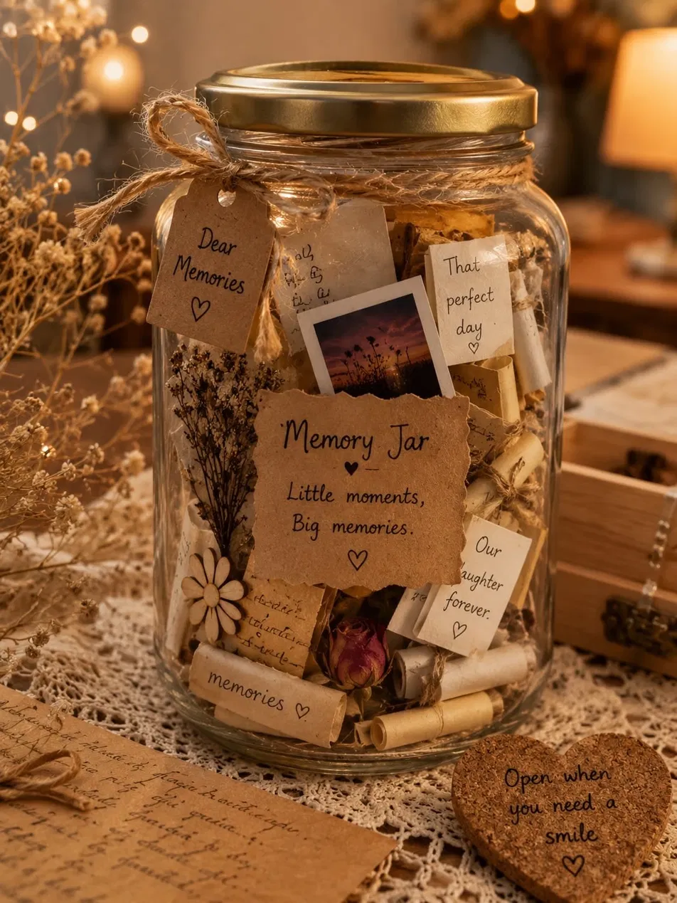

Женщина женщине — дом. Я зажгла свет в своём окне для тебя. Он горит здесь каждую секунду, днём и ночью. Приходи, когда будет непросто.
Пара вопросов, чтобы подбирать слова, которые подойдут именно тебе.
Ответы остаются только на этом телефоне. Поменять их можно в разделе «Помощь».
Какая у тебя сегодня погода внутри?
Последние дни было много гроз. Это тяжело выдерживать в одиночку, и ты не обязана.
Сегодня достаточно просто прожить этот день.
Пока здесь пусто. Нажми на сердечко у фразы, которая откликнулась, и она появится здесь.

Записки хранятся только на этом телефоне.
Напиши себе — той, кем ты будешь через время. Письмо сохранится и откроется, когда придёт срок.
Не знаешь, с чего начать? Нажми на начало фразы — оно появится в письме. Листай подсказки вбок →
Одна спокойная минута. Следи за огоньком: он разгорается на вдохе и затихает на выдохе.
Нажми, когда будешь готова
Шаг 1 из 3
Ничего не нужно решать. Просто дыши вместе с огоньком: вдох, пока он разгорается, и длинный выдох, пока затихает.
Если такое с тобой впервые, сильно болит в груди или трудно дышать, позвони 112. Пусть врачи проверят, что это тревога.
Это пройдёт.
Оно уже проходит.
Тревога похожа на волну: она поднимается, доходит до самой высокой точки и спадает. Ты уже прошла часть этой волны. Ты здесь, и ты справляешься.
Бывает, одна мысль крутится по кругу и не отпускает. Давай спокойно посмотрим на неё вместе. Любой вопрос, кроме первого, можно пропустить.
Шаг 1 из 6
Запиши её так, как она звучит в голове. Например: «Я ни с чем не справляюсь».
Что ты чувствуешь, когда думаешь её?
Отметь всё, что откликается. Чувства не бывают «неправильными».
Узнаёшь в мысли какую-нибудь ловушку?
Так мозг часто говорит с нами, когда больно или страшно. Если ничего не подходит, просто нажми «Дальше».
Тебе правда тяжело, и это важно признать.
Вспомни хотя бы один случай, когда было иначе. Даже совсем маленький.
С близкими мы обычно гораздо добрее, чем с собой. Попробуй сказать это и себе.
Новой мысли не нужно быть радостной. Достаточно, чтобы она была правдивой и доброй к тебе. Можно начать с подсказки — листай их вбок.
Если появляются мысли о смерти или о том, чтобы причинить себе вред, с этим не нужно оставаться одной. Там выслушают без осуждения, круглосуточно.
Позвонить: +7 495 989-50-50Мысль, с которой ты пришла
Новые слова
Всё, что ты пишешь, остаётся только на этом телефоне.
Позвонить можно в любое время. Тебя выслушают без осуждения.
Психологическая помощь МЧС России +7 495 989-50-50 Круглосуточно, анонимно и бесплатно Экстренная помощь 112 Если есть опасность для жизниДепрессия во время беременности или после родов бывает примерно у каждой седьмой женщины. Это не слабость и не значит, что ты плохая мама. Это состояние, которое лечится.
В первые дни после родов многие плачут без причины, быстро устают, настроение скачет. Обычно это проходит само за одну-две недели.
Скажи врачу, если две недели и дольше:
Депрессия может начаться и во время беременности, и в любой момент в первый год после родов. Не нужно ждать планового приёма: можно сказать гинекологу в женской консультации, терапевту или педиатру на осмотре малыша.
Звони 112 сразу, если появились мысли навредить себе или малышу, или кажется, что происходит что-то странное: ты видишь или слышишь то, чего нет, мысли путаются.
Позвонить 112Если трудно подобрать слова, можно сказать так:
Меня беспокоит моё настроение. Уже больше двух недель мне почти всё время грустно и тревожно, и мне трудно справляться. Пожалуйста, проверьте, всё ли со мной в порядке.
Помощь есть: разговор с психологом, а если нужно, лечение, которое подбирают с учётом беременности и кормления грудью.
Это тихое место для тех, кому сейчас тяжело. Здесь нет ленты, лайков и чужих мнений — только поддержка.
Версия 1.0
Звук камина: «Inside Fireplace Ambiance With Outside Party Noise», автор donnydb, freesound.org, CC BY-NC 4.0. Запись склеена в петлю и выровнена по громкости.
Версия 1.1
Created by Irina Dobroslavskaya · v1.0